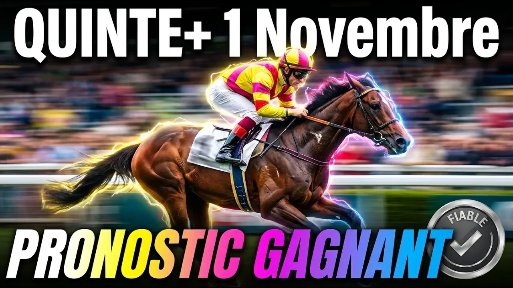

Bienvenue sur le temple du trot d'Anjou-Maine, là où le sable de Bellevue-la-Forêt s'apprête à devenir le théâtre d'une bataille stratégique mémorable. Ce dimanche premier novembre 2026, à quinze heures quinze, dix-huit champions de cinq à dix ans prennent le départ du Grand Prix de la Ville de Laval. C'est la quatrième course de la Réunion 1, une Course Européenne de niveau A dotée de soixante-six mille euros d'allocations sur les deux mille huit cent cinquante mètres.
Pour cette belle journée dominicale, prenons le temps d'analyser sereinement la véritable mécanique de ce Quinté+. Aujourd'hui, nous adoptons une approche posée pour disséquer la forme des partants, décrypter la tactique des échelons de départ et révéler les véritables intentions des entourages.
Pourquoi tant de parieurs s'égarent-ils sur l'hippodrome de Laval ? Parce qu'ils sous-estiment la sélectivité de cette piste en sable corde à gauche. Rendre vingt-cinq mètres sur un anneau aussi roulant exige un effort considérable. Si les trotteurs du premier poteau imposent un rythme soutenu, les concurrents du second échelon doivent produire un surcroît d'énergie colossal pour refaire leur retard.
Prenons le temps de bien comprendre les conditions de cette épreuve réservée aux trotteurs de cinq à dix ans n'ayant pas gagné cinq cent soixante-quinze mille euros. Le recul de vingt-cinq mètres est fixé à deux cent quarante-quatre mille euros. Sept chevaux s'élancent au premier poteau sur deux mille huit cent cinquante mètres, tandis que onze trotteurs doivent rendre vingt-cinq mètres. Abordons sereinement l'analyse détaillée des dix-huit forces en présence.
Commençons paisiblement notre tour d'horizon au premier échelon avec le numéro un, Jéricho du Rib. Ce hongre de sept ans entraîné par Joël Hallais et drivé par Clémence Hallais-Dersoir compte deux cent six mille euros de gains. Absent depuis fin août après un échec à Cabourg, il effectue une rentrée en restant ferré. Attendons sereinement de le revoir.
Le numéro deux, Jibi du Fruitier, est un hongre de sept ans présenté par Charles-Marcel Bruneau et confié à Mathieu Mottier. Riche de deux cent vingt-sept mille euros de gains, il est déferré des quatre pieds. Ses récentes sorties se sont soldées par des places honorables. Mathieu Mottier affiche quarante pour cent de réussite dans les cinq premiers au niveau Quinté+. C'est un outsider très valable pour accrocher une petite place en toute quiétude.
Passons au numéro trois, Jerzinho Sport. Ce hongre de sept ans préparé par Cécile Desmontils est drivé par Florian Boudet. Crédité de deux cent trente-quatre mille euros de gains, il reste ferré mais garde ses capacités intactes. Capable d'un coup d'éclat comme lors de sa deuxième place dans un Quinté+ au printemps, il constitue un coup de folie séduisant s'il bénéficie d'un bon parcours. Gardons-le dans nos esprits avec sérénité.
Abordons la favorite de la course, le numéro quatre, Laroze du Gers. Cette femelle de cinq ans entraînée et drivée par Matthieu Abrivard compte deux cent trente-neuf mille euros de gains. Sixième du Critérium des 5 ans puis vainqueure d'un Groupe III, elle se trouve idéalement engagée au premier poteau. Plaquée des antérieurs et déferrée des postérieurs, le tandem Matthieu Abrivard enregistre quarante-sept pour cent de réussite dans le Quinté+. C'est une base absolue qui inspire confiance et sérénité pour ce dimanche.
Regardons avec attention le numéro cinq, Far West Bi. Ce mâle de cinq ans mis au point par Hansen Erik Bondo est confié à Éric Raffin. Titulaire de deux cent quarante et un mille euros de gains, ce trotteur d'origine italienne s'est classé cinquième d'un Groupe III cet été. Déferré des postérieurs, le duo Éric Raffin et Hansen Erik Bondo affiche quarante pour cent de réussite dans le top cinq des Quinté+. Il détient une chance de premier ordre pour ce dimanche paisible.
Le numéro six, Lemon Tree, est un mâle de cinq ans préparé par William Bigeon et drivé par Alexandre Abrivard. Crédité de deux cent quarante-deux mille euros de gains, ce fils de Face Time Bourbon vient de se classer troisième aux Sables-d'Olonne. Déferré des postérieurs, il détient une très belle chance pour les places.
Le numéro sept, Janko Haufor, hongre de sept ans entraîné par Christian Bigeon et drivé par Damien Bonne. Avec deux cent quarante-trois mille euros de gains, il découvre l'engagement idéal à la limite du recul. Après une course de rentrée nécessaire, il se présente plaqué des antérieurs et déferré des postérieurs. Préparé pour cet objectif, il convient de s'en méfier sereinement.
Passons maintenant avec calme au second échelon sur deux mille huit cent soixante-quinze mètres. Le numéro huit, Jasmine de Vau, femelle de sept ans entraînée et drivée par Charles Dreux, effectue sa rentrée après neuf mois d'absence. Le numéro neuf, Indy Dark, mâle de huit ans présenté par Jean-François Mary, revient également. Le numéro dix, Illusion Jipad, femelle de huit ans entraînée et drivée par Pascal Lelièvre, reprend après sept mois. Ces trois rentrées nécessitent de la patience.
Le numéro onze, L'Écrin d'Or, mâle de cinq ans entraîné par Laurent-Claude Abrivard, effectue sa rentrée après huit mois. Plus en vue au trot monté, il aura besoin de courir. Les numéros treize à seize (Idylle Express, Inshore et J'Aime le Foot) effectuent également des rentrées qui demandent de la prudence.
Le numéro douze, Ibiza Bella, est une femelle de huit ans préparée par Jean-Paul Marmion et confiée à Antoine Wiels. Riche de quatre cent trente-trois mille euros, elle fait preuve d'une régularité remarquable. Le duo Antoine Wiels et Jean-Paul Marmion affiche cinquante-sept pour cent de réussite dans les cinq premiers au Quinté+. Même si elle reste ferrée, elle peut viser une petite place avec sérénité.
Observons le numéro quinze, Isofou du Chêne. Ce hongre de huit ans mis au point par Julien Le Mer est drivé par Paul-Philippe Ploquin. Titulaire de cinq cent vingt mille euros de gains, il est d'une régularité exemplaire. Bien qu'absent depuis quatre mois et présenté ferré, le tandem Paul-Philippe Ploquin et Julien Le Mer enregistre quarante et un pour cent de réussite dans les cinq premiers. Un chèque reste paisiblement à sa portée.
Venons-en au numéro dix-sept, Kanto Avis. Ce mâle de six ans entraîné par Marc Sassier et drivé par Benjamin Rochard totalise cinq cent cinquante-sept mille euros. Trotteur de haut niveau, il a remporté les étapes du Grand National du Trot au Croisé-Laroche et à Laval, s'imposant aussi dans un Groupe III sur ce tracé. Vainqueur récemment à Toulouse, il aborde cette course en pleine forme et dans un état d'esprit excellent. Malgré son rendement de vingt-cinq mètres, c'est un prétendant très sérieux à la victoire qui apporte la tranquillité d'esprit.
Terminons paisiblement avec le plus riche du lot, le numéro dix-huit, King Opera. Ce mâle de six ans entraîné et drivé par William Bigeon compte cinq cent soixante-sept mille euros. Deuxième de cette épreuve l'année dernière, il vient de briller sur l'herbe dans le Trophée Vert. Très à l'aise sur la piste de Laval qu'il connaît bien, il détient une première chance théorique à appréhender avec sérénité.
Pour élaborer une stratégie de jeu sereine sur ce Grand Prix de la Ville de Laval, accordez la priorité aux concurrents du premier échelon au sommet de leur forme, tout en vous appuyant sur les champions du second poteau. La candidature de Laroze du Gers au premier poteau s'impose comme une base solide et rassurante, flanquée de Far West Bi sous la monte du maestro Éric Raffin et de Kanto Avis malgré son recul de vingt-cinq mètres. Pour compléter vos combinaisons en toute tranquillité, Lemon Tree, King Opera et Janko Haufor apportent de solides garanties pour ce dimanche apaisant.
Base : 4 Laroze du Gers
Top 5 : 4 - 17 - 5 - 18 - 6
Couplé Placé (sérénité dominicale) :
4 Laroze du Gers avec 17 Kanto Avis et 5 Far West Bi
Deux sur Quatre (équilibre parfait) :
4 - 17 avec 5 - 18 - 6 - 7
Multi en 5 (harmonie optimale) :
4 - 17 - 5 - 18 - 6
Quinté+ Ordre (sagesse récompensée) :
4 - 17 en base avec 5 - 18 - 6 - 7 - 3 - 2 en associés
Retrouvez l'analyse vidéo complète sur notre chaîne YouTube Bravo Turf. Prenez le temps de vous abonner, d'activer la cloche des notifications et de laisser un pouce bleu si cette analyse vous a apporté de la valeur pour ce dimanche paisible.
⚠️ Jouez avec modération
Le turf doit rester un plaisir serein, surtout le dimanche. Ne misez jamais plus que ce que vous pouvez vous permettre de perdre. Fixez-vous un budget hebdomadaire et respectez-le avec tranquillité. En cas de difficulté, consultez Joueurs Info Service au 09 74 75 13 13.